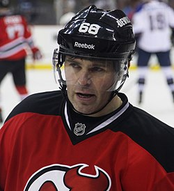

Jaromír Jágr (* 15. února 1972 Kladno) je český hokejový útočník hrající za český extraligový klub Rytíři Kladno. Dříve působil v amerických a kanadských klubech Pittsburgh Penguins, Washington Capitals, New York Rangers, Philadelphia Flyers, Dallas Stars, Boston Bruins, New Jersey Devils, Florida Panthers a Calgary Flames, několik let hrál také za ruský tým Avangard Omsk v KHL. V Česku je spjatý s kladenským klubem, jehož je od roku 2011 většinovým majitelem. S českou reprezentací vyhrál olympijský hokejový turnaj i mistrovství světa. Je celosvětově respektovanou a uznávanou osobností v oblasti sportu a řadí se mezi nejlepší hokejové hráče všech dob.
Jaromír Jágr byl draftován týmem Pittsburgh Penguins jako celkově pátá volba 1. kola draftu v roce 1990. Jágrův otec byl původně proti, aby jeho syn hrál v 18 letech v zámoří, a to mimo jiné byl jeden z hlavních důvodů, proč byl draftován až jako číslo pět.
Do Washingtonu byl vyměněn 11. července 2001 s Františkem Kučerou za Krise Beeche, Michala Sivka a Rosse Lupaschuka. Velká očekávání, která do něj Washington vkládal, však Jágr nenaplnil, a v lednu 2004 byl nakonec vyměněn do klubu New York Rangers.
Mezi Jágrovy největší úspěchy patří zlato z olympiády v Naganu 1998, zisk dvou Stanley Cupů, zlata z Mistrovství světa 2005 a 2010, Art Ross Trophy pro nejproduktivnějšího hráče NHL, kterou získal pětkrát, a Hart Memorial Trophy pro nejužitečnějšího hráče za ročník 1998-99.
V roce 2005 byl v anketě českého Klubu sportovních novinářů zvolen Sportovcem roku a zároveň se tento rok spolu s Jiřím Šlégrem stal členem Triple Gold Clubu, jenž sdružuje hráče, kteří vyhráli všechny tři hlavní hokejové turnaje – Stanley Cup, olympijské hry a mistrovství světa. Je nejvýše postaveným hráčem kanadského bodování NHL, kterému se toto povedlo (Wayne Gretzky, který je jediným hráčem v historické statistice kanadského bodování v NHL před Jágrem, nikdy nevyhrál olympijské hry ani mistrovství světa).
Dne 22. ledna 2006 se stal vítězem ankety nejlepší sportovec světa na portálu Seznam. Byl rovněž vlajkonošem na ZOH 2010 ve Vancouveru.
U příležitosti 100. výročí NHL byl v lednu 2017 vybrán jako jeden ze sta nejlepších hráčů historie ligy.